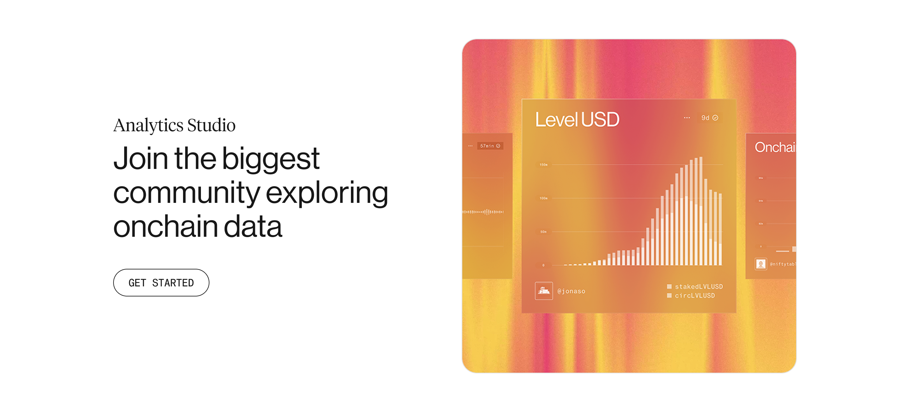

Evolving Dune’s brand for its next phase
The challenge
Dune had strong brand recognition, but its identity was starting to feel out of sync with where the product and the company were heading.
In a crypto landscape dominated by neon and visual noise, the opportunity was to move in a more refined, distinctive direction. The goal was to modernize the brand without losing the elements that made it instantly recognizable, evolving it rather than replacing it.
The process
Balancing continuity with reinvention.
We audited the existing identity to identify what carried equity and what limited it, then built a more cohesive and flexible system around those core elements. As new product directions emerged, we worked closely with the team to define how each would live within or expand beyond the brand ecosystem.
The outcome
A refreshed brand system and a growing product ecosystem.
Alongside the evolution of Dune’s core identity, we developed a new brand for SIM, their cross-chain app, designed to speak to a different audience while still feeling connected to the parent brand.
We also redesigned the website to better reflect where Dune is today, clarifying its offering, product ecosystem, and overall positioning.
Results
The updated brand gave Dune a more distinctive and scalable presence, supporting new product launches and making its offering clearer and easier to navigate.


